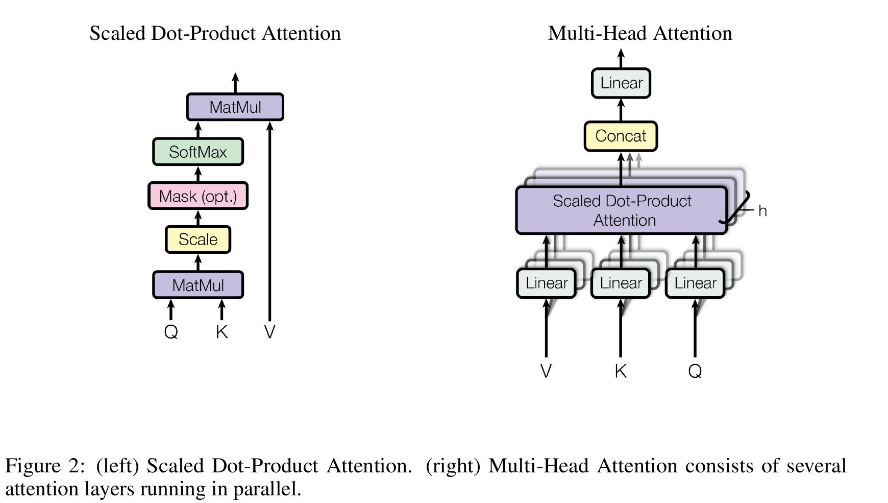

机制拆解 论文
- 注意力 = 把 query 与一组 key-value 对映射为输出:输出是 value 的加权和,权重由 query 与 key 的兼容度决定
- 计算:Q·K 点积 → 除以 √d_k → softmax 得权重 → 加权求和 V
- 为什么缩放:d_k 大时点积量级变大,softmax 进入梯度极小区域,故乘以 1/√d_k
- Mask(opt.):解码器中把非法(未来)连接置 −∞
Attention(Q,K,V) = softmax(QK^T / √d_k) V

原论文 Figure 2(第 4 页):左 = 缩放点积注意力;右 = 多头注意力(多个注意力层并行)